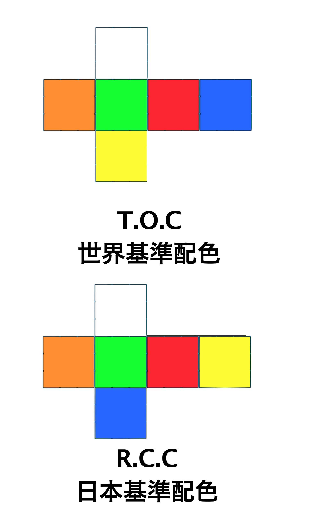
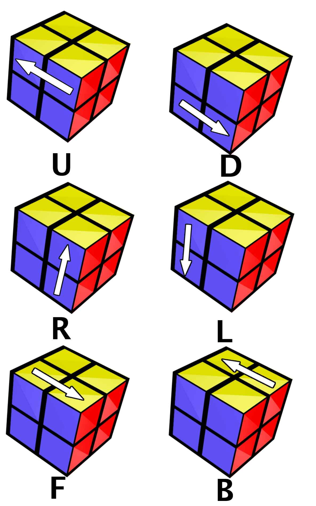
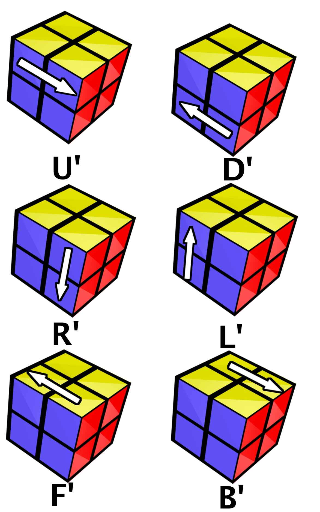
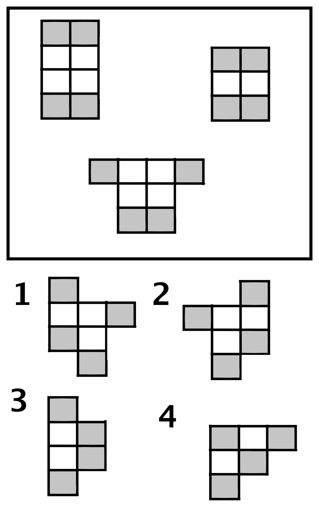
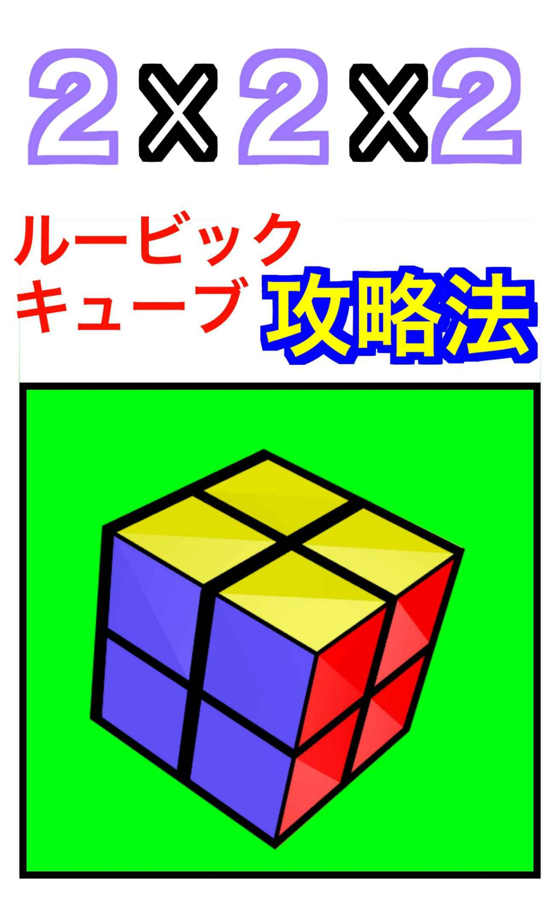

| 2x2x2のルービックキューブ攻略法 (世界ジェニック) | |
| 杉江海飛 | |
| (2017) | |
杉江海飛
この本を読んでいただきありがとうございます。
いや、読んでいただきおめでとうございます
と言う方が正しいのかもしれません。
この本を手に入れたあなたは、この本を用いて練習することで
必ず
２ｘ２ｘ２のルービックキューブを揃えられるようになるのだから。
今日はあなたが２ｘ２ｘ２のルービックキューブを揃えられるようになることが確定した記念すべき日 です。
早速解法をご説明しましょう---と言いたいところですが、解法を覚える上で、ある程度の２ｘ２ｘ２のルービックキューブの事前知識が必要になってきます。
まずはその事前知識から確認していきましょう。
まずは、２ｘ２ｘ２のルービックキューブの選び方からご紹介します。
端的に言ってしまうと２ｘ２ｘ２でしっかり回すことが出来ればなんでもいい
です。
なので既に持っているならばそれを使って揃えましょう。
ですが、将来的にスピードを早めたり目隠しで揃えられるようになることを目指したい、ということであれば「競技用」のものを選ぶことをオススメします。
回すのがなめらかだったり、耐久性に優れていたりと様々な優れた部分があります。
また、ルービックキューブにはそういった機能性についてのこと以外にも配色の種類があるので、その点も含んだ選び方をするのがいいのではないでしょうか。
しかし、配色で選ぶなんて言われても配色にどのような種類があるのかさえ分からなければ意味がないので、ご説明していきます。
ルービックキューブ（２ｘ２ｘ２）における配色は大きく分けて２種類。
「R.C.C」と「T.O.C」です。
R.C.Cは日本基準配色、T.O.Cは世界基準配色のことです。
具体的に言うと、黄色の位置と青の位置が逆というだけの違いです。

まあ、配色についてもどちらがいいということはないので好きな方を選んでいただければ結構です。
ちなみに本書の図解では世界基準配色のルービックキューブを採用しているので、本当にどっちでもいいのであれば世界基準配色のルービックキューブを選んでいただければいいかと思います。
プラスして、シールかタイルかという違いは確認しておいたほうがいいです。
簡単に言えば色の部分が「貼ってあるものか埋め込まれているものか」の違いです。
耐久性で言えば圧倒的にタイル式のほうが優れています。
筆者のオススメは、これらの要点を全て有しているMoYu TangPo (モーユー タンポー)という製品です。
解法を説明するにあたって、回転記号というものを覚えていなければ、それを理解することができません。
ということで、次は回転記号を覚えていきましょう。
回転記号とは、簡単にいえば楽譜の音符のようなものです。
其れを見て弾けば、誰もが同じ音楽を奏でることができます。
其れと同じように回転記号の配列を見て回せば、誰もが同じようにルービックキューブの色を移動させることができます。
Ｕ、Ｄ、Ｒ、Ｌ、Ｆ、Ｂ。
この６つの意味から覚えていただきます。
それぞれ、上、下、右、左、前、後ろの面を指す記号で、「その面を正面から見て時計回りに90度回す」という意味です。
これにプラスして「'(プライム)」のついた記号があります。
この場合は「'」がない時と逆（反時計回り）に回します。
プライム以外にも付随する記号があります。
「２」です。
意味は「９０度ではなく１８０度回す」という意味です。
２回回す、と覚えるといいのではないでしょうか。
ということで、回転記号を図解にしてみました。


覚えていただけたでしょうか？
もし覚えるのが億劫であれば解法が出てくるたびにこのページを開いていただければそれで揃えられるので、そんなに気にしないで先に進んでしまうのもいいかもしれません。
一面揃える
→上面を揃える
→上面横を揃える
ルービックキューブは、スクランブル（１０〜２０回程度ランダムに回転させ、混ぜること）から始まります。
まだスクランブルをしていない人はスクランブルをしてから先を読んで下さい。
様々な揃える手順がある中、ここでは初心者向けの手順を紹介します。
その手順はまず最初に一面揃えます。
早速揃えていきましょう。
まずは、揃える色を決めます。
自由に好きな色を選んでほしいのですが、便宜上ここでは最初に揃える色には黄色を選びます。
なので図解に使われている参考画像やこの後の文章上は全て黄色から揃えられてるので注意してください。
最初に揃える色が決まったら、その色(ここでは黄色)の面があるキューブを一つ探してください。
ルービックキューブの構造上1/2のキューブは黄色の面があるので、探すのは簡単だと思います。
見つかったらその一つのキューブを基点にそろえていきます。
そのキューブの隣の位置のキューブを探してください。要するに、黄色と青とオレンジのキューブが基点だとしたら、黄色と青と赤のキューブか黄色とオレンジと緑のキューブという意味です。
右か左かは問いません。
この時、基点となるキューブを見失わないようにしてください。
見つかりましたか？
それでは、そのキューブを基点のキューブの隣のあるべき場所に移動させましょう。
まずは、基点としたキューブがある同じ面に黄色がある場合から説明します。
最初から隣にあった場合はそのままでＯＫなので省くと２パターン。
基点のキューブの反対側の隣に在るパターン。
その場合は、その２つのキューブの異なる色どうしが並んだ面をＦ、つまり前面、黄色面をＵ、つまり上面として見て、「Ｒ２→Ｆ２」。
これで揃います。
基点のキューブの位置を再び確認してみてください。目的の２キューブが正しい並び方になってると思います。
続いて基点のキューブの対角線上にあるパターン。
この場合は、基点のキューブの目標のキューブと共通する黄色ではない色、つまり隣り合う黄色ではない色の面を前面とした時に、対角線上のキューブが自分から見て左側だったら「Ｒ'→Ｕ'→Ｒ」右側だったら「Ｒ→Ｆ→Ｕ'→Ｒ'」で揃えてください。簡単に言うと、例えば基点のキューブと対角線上にあるキューブの共通する色が青だとしたら、基点のキューブの青を前面として、その対角線上にある隣り合うはずのキューブが右側にあるか左側にあるかということです。
これで上面にあるキューブの揃え方はわかりましたね。
次は基点のキューブと隣り合うはずの黄色が背面にある場合の移動法。
背面にある場合は、比較的簡単です。基点のキューブの黄色の面の対角線のキューブのちょうど反対側に移動させて、基点のキューブの目標と共通する黄色ではない方の色の面を前面として「Ｒ２」です。
続いて基点のキューブの黄色がある面を上面とした時に、側面となる面の下段に隣り合うはずのキューブがある場合です。
まずは「Ｕ」で移動させる目標地点、基点のキューブの横の真下にあたる部分に移動させて、基点のキューブの目標のキューブと共通する黄色ではない色、つまり隣り合う黄色ではない色の面を前面とした時に、目標のキューブの黄色の面がこちら側を向いているか確認してください。
向いている場合はそのキューブが基点のキューブの左にあれば「Ｌ」右にあれば「Ｒ」を。
向いていない場合、つまり隣の面の方を向いている場合は、左の面を向いているならば「Ｌ→Ｄ→Ｌ'」、右の面を向いているならば「Ｒ'→Ｄ'→Ｒ」をしてください。
続いて側面の上段に基点のキューブの隣のキューブがある場合です。
この場合は、正直条件分岐が多すぎて「覚えるリソースを割くのがもったいない状態」なので、適当に下面や側面下段などに移動させてから、上記の方法で移動させてください。
さあ、これで２つのキューブが隣り合いましたかね？
続いて、３つめのキューブの揃え方です！
・・・と言いたいところですが、実はその必要はありません。
３つめのキューブ、つまり今揃った２つのキューブのどちらかの隣にあるはずのキューブ（黄色のキューブが入ってる隣のキューブです。）は、上記の方法で揃えることができるんです。
もちろん揃っている２つのキューブを崩さないようにする必要はありますが。
なので上記の方法を用いて、３つめのキューブも揃えてください。
揃いましたか？
それでは黄色の面最後のキューブを揃えましょう。
黄色の面最後の面です。
４キューブ目となると上記と同じように、とはいきません。
３つのキューブを崩さないように移動させるのには特殊な解法が必要です。
まずは最後のキューブが黄色の背面にある場合の解法から見ていきましょう。
黄色の面の空いている部分の背面にまで「Ｄ」で移動させて、そのキューブのある面の側面をそのキューブが左側になる状態で前面として、そのキューブの黄色の面がある面を下面、黄色の３つのキューブが集まっている面を上面として、「Ｌ→Ｄ'」で側面下段に移動させます。
そうしたら、次に書く側面下段にあるキューブの解法により、揃えてください。
それでは側面下段にあるキューブの揃え方です。
移動させたい場所の真下にまでＤで移動させて、こちら側をそのキューブの黄色の面がむいている状態で右側にそのキューブがあるのであれば、「Ｆ→Ｄ→Ｆ'」で、左側にあるのであれば、「Ｆ'→Ｄ'→Ｆ」で揃えてください。
続いて、側面の上段にある最後のキューブを移動させる方法です。
この場合、そのキューブの黄色の面がこちらを向くようにした場合、右側にそのキューブがあるか、左側にあるかを確認してください。
右側にある場合は、「Ｒ'→Ｄ→Ｒ→Ｆ→Ｄ→Ｆ'」
左側にある場合は、「Ｌ→Ｄ'→Ｌ'→Ｆ'→Ｄ'→Ｆ」
おめでとうございます。一面揃えることができました。
さあ、いよいよ後半戦となってまいりました。
後半戦に挑むにあたって、ルービックキューブをひっくり返してください。
ここまでは黄色の面を上面として解法を見てきましたが、ここからは黄色の面を下面として揃えていきます。
世界基準配色で言うと白の面が上面になるということですね。
ここで、上面の条件分岐を図解で見てみましょう。

これを見ると、「７種類も解法を覚えなければならないのか・・・」と思うかもしれませんが、安心してください。
本書では、できるだけ解法を簡単にするための工夫をします。
画像の下側を前面として考えてください。
まず、上の三種類は、「Ｒ→Ｕ→Ｒ'→Ｕ→Ｒ→Ｕ２→Ｒ'」で、下の４種類のどれかにして解いてください。
あと、「Ｒ→Ｕ→Ｒ'→Ｕ→Ｒ→Ｕ２→Ｒ'」この解法は、この後も使うので、便宜上「あ解法」と名付けましょう。
下の４種類の一つ目は、今出た「あ解法」で解けます。
二つ目は、あ解法を左右反対にしてすることにより解けます。
つまり、「Ｌ'→Ｕ'→Ｌ→Ｕ'→Ｌ'→Ｕ２→Ｌ」です。
これは、便宜上「あ解法#」と名付けましょう。
３つめは、「Ｒ→Ｕ→Ｒ'→Ｕ'→Ｌ'→Ｕ→Ｒ→Ｕ'」で揃えられます。
これは便宜上「い解法」と名付けます。
４つめは、３つめを戻していくイメージでまったくもって逆の順番と方向に動かすこと出揃うことができます。
つまり、「Ｒ→Ｌ'→Ｕ→Ｒ'→Ｕ'→Ｌ→Ｕ→Ｒ→Ｕ'→Ｒ」で揃えられるということです。
これは便宜上「解法い」と名付けます。
さあ、これで上面を揃えることができました。
ラストです。
最後は、上面横が２つ正しく並んでいるキューブがあるか、ないかを確認してください。
つまり、側面に一面完全に揃っている面があるかどうかです。
ある場合は、その面を右面として、「い解法→Ｕ'→解法い」
ない場合は、側面のどの面を前面としてもいいので、「解法い→Ｕ２→い解法」で揃えてください。
お疲れ様でした。
完成です。
最後に、この本で使われた図解の画像をまとめて載せておきます。
攻略に役立ててください。
